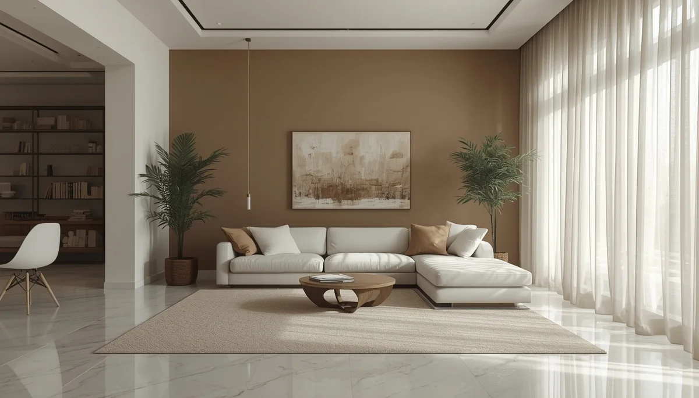

Preparar el hogar para la exploración segura
El entorno físico en el que crece un niño actúa como un educador silencioso. Para que el desarrollo psicomotor se despliegue con total libertad, las viviendas necesitan adaptarse a las necesidades de movimiento de la infancia, eliminando barreras innecesarias y asegurando zonas despejadas donde rodar, trepar o gatear sin riesgos excesivos ni prohibiciones constantes.
Diseñar espacios accesibles y estimulantes
Disponer de alfombras firmes pero cómodas, retirar objetos frágiles de las zonas bajas y asegurar los muebles pesados a la pared permite relajar la vigilancia constante de los adultos. Cuando el hogar está preparado para el descubrimiento, el niño puede explorar con confianza sin escuchar un "no" continuo, lo que favorece positivamente su autonomía y su iniciativa exploratoria.
Materiales sencillos que invitan al movimiento
No se requieren grandes inversiones en juguetes complejos; cojines firmes, pequeños túneles de tela, superficies texturizadas o cajas de cartón estables ofrecen retos motores mucho más ricos y versátiles que cualquier estructura comercial prefabricada.
"Un hogar adaptado a la infancia es aquel que cambia el exceso de prohibiciones por la confianza en un entorno seguro y preparado."
Armonizar el orden familiar con la libertad infantil
Adaptar la casa al movimiento libre demuestra que es posible conjugar la estética y el orden del hogar con el bienestar y la expansión motora de los más pequeños.
➔ Volver al índice de Desarrollo psicomotor